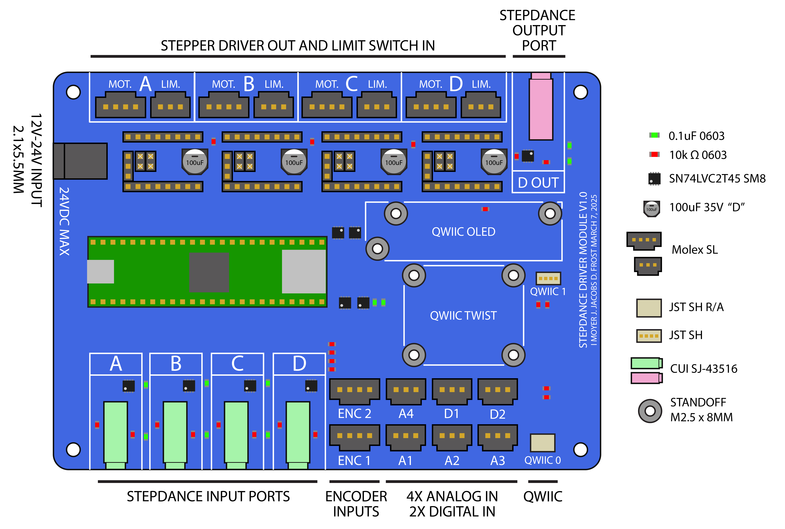
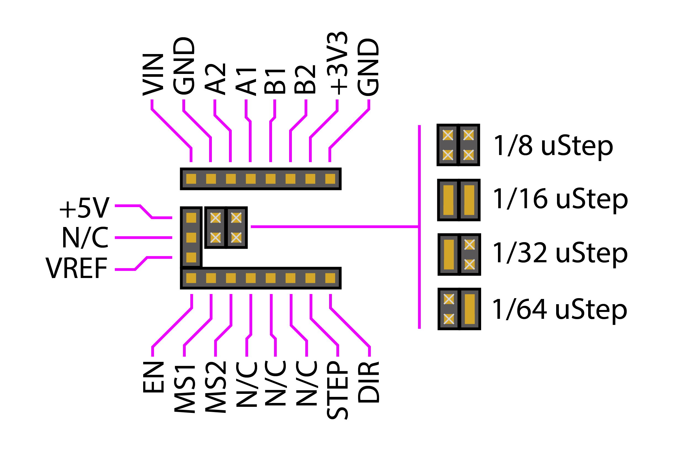
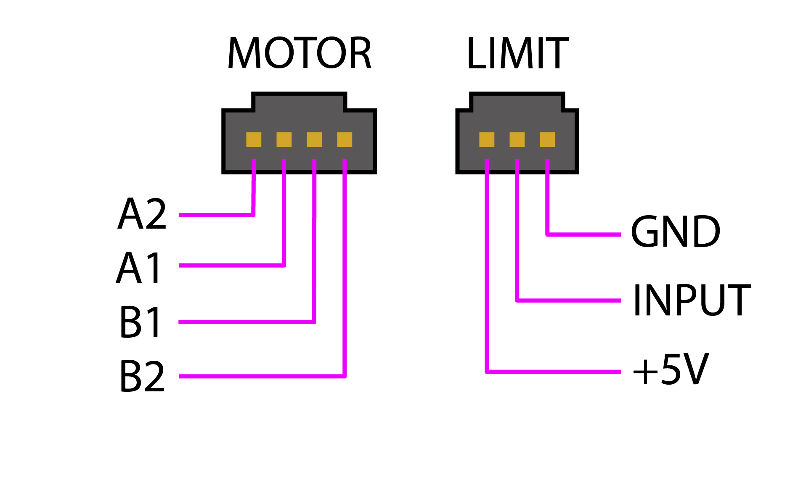
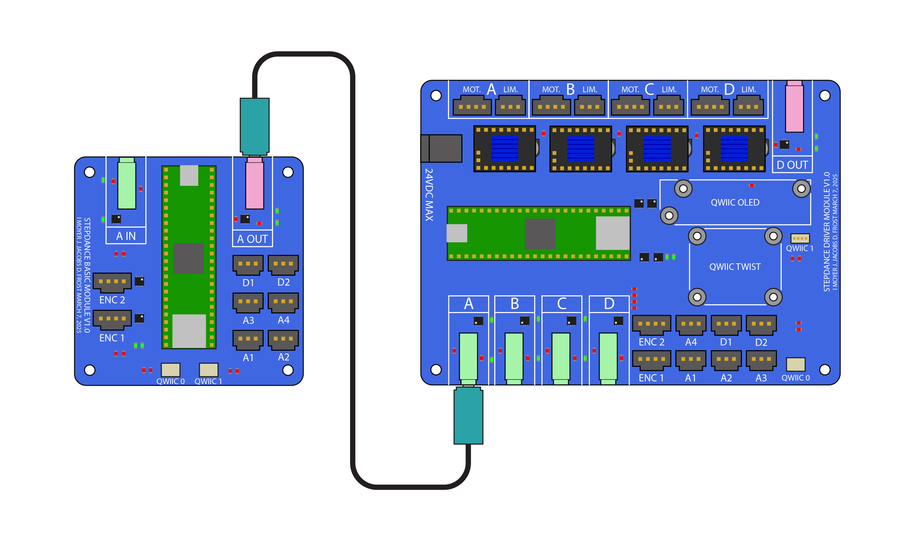

What is Stepdance?
Stepdance is a framework for creative motion control. Stepdance is:
- Real-time: Control motors with essentially zero latency using a variety of inputs such as potentiometers and encoders.
- Modular: Stepdance programs can be composed of software modules, and physical stepdance boards can be chained together.
- Hybrid: Blend real-time inputs and manipulation with traditional pre-planned approaches such as G-code.
Stepdance Hardware
Driver Module Board v1.0

Stepper Drivers and Motor Interfaces
This board is designed for BIGTREETECH TMC2209 driver modules. The sockets have the following pinouts, and microstepping is set by bridging the 2x2 male header pins as shown: 
Note that the +5V supply pin is additional to the pins on the TMC2209, and is for future expansion options. These sockets provide a flexible interface for a variety of outputs. For example, our servo stepper board accepts Step/Direction inputs and converts into a hobby servo output.
All driver socket logic connections (e.g. MS1/MS2, STEP, DIR, EN) are at 3.3V
Motors interface with the Stepdance driver module via a 4-pin motor header and a 3-pin limit switch header. The limit switch input is at 5V for compatibility with industrial proximity switches.
Motor interface header pinouts are as shown: 
Encoders and Analog / Digital Inputs
Two quadrature encoder inputs and six general-purpose IO (GPIO) ports are provided:
- ENC1 and ENC2 are 5V quadrature inputs, and are compatible with standard optical encoders like those from US Digital or TAISS Optical Encoders.
- A1 thru A4 are 3.3V analog and digital inputs, as well as digital outputs.
- D1 and D2 are 3.3V digital inputs and outputs.
These are all Molex SL series connectors. Pinouts are as shown: 
The A and B encoder inputs are pulled high thru 10k resistors, for compatibility with open-collector encoders like the TAISS modules.
A1-A4 and D1-D2 do not have external pullups, but internal pullups on the microcontroller can be enabled.
QWIIC Connectors
Two are provided. It is intended that QWIIC1 is for interfacing with a board-mounted display and knob, while QWIIC0 is for user accessories.
Note though that QWIIC1 exposes the TX4/RX4 serial port (at 3.3V), which can be useful for interfacing with certain accessories. Pinout as shown: 

DC Power Inputs
The onboard Teensy 4.1 and most IO gets power from the USB connector on the Teensy itself. A 5.5mm OD / 2.1mm ID barrel connector accepts 12V-24V power that is routed to the stepper drivers.
Stepdance Ports
- four independent stepdance input ports A->D.
- stepdance output ports A->D are connected to stepper driver sockets
- additionally, output port D is mirrored to a standard stepdance TRRS connector.
We discuss stepdance ports in detail later in this document.
Display and Control Knob Mounting
Board-mounted standoffs are provided for a Sparkfun QWIIC OLED and a Sparkfun QWIIC Twist knob.
Although three standoffs are shown for the OLED, only two should be installed on the PCB. For an old-style OLED display, these are the left and right-most standoffs. For a new-style OLED, these are the top row of standoffs.
Microcontroller
The Stepdance driver module uses a Teensy 4.1, which is based off the IMXRT1062 (32-bit, 600MHz). The pinout we use is shown below: 
Notes on pin selection:
- stepdance outputs A-D use FlexIO
- stepdance inputs A-D use FlexPMW
- quadrature inputs use the QuadEncoder library
- I2C0 is connected to QWIIC0
- I2C1 is connected to QWIIC1, and also exposes TX4/RX4
- output ref pins are analog inputs that allow the MCU to read the current setting on the drivers. Eventually we'll use this to help guide the user in setting the current.
- output enable pins individually enable each driver
- "LIM" are limit switch inputs for each output port.
Dimensions
- Board dimensions are 5.5" x 4.0"
- Four 3.5mm ID mounting holes are on 5.1" x 3.6" centers.
- Standoffs of up to 6.3MM / 0.25" OD may be used. - The corners are radiused at R0.15"
Basic Module v1.0

This is a stripped-down version of the Driver Module. It has:
- 2 encoder ports
- 4 analog/digital inputs A1->A4, which also can be digital outputs
- 2 digital inputs/outputs D1->D2
- 2 QWIIC connectors
- 1 stepdance input port
- 1 stepdance output port
Pinouts for all connectors are the same as the driver module.
Microcontroller
The stepdance basic module can utilize either a Teensy 4.1 or a Teensy 4.0. The only difference is cost, and the 4.1 has an onboard SD card.
The pinout is different from the driver module, and is shown below: 
Dimensions
- Board dimensions are 3.0" x 3.0"
- Four 3.5mm ID mounting holes are on 2.6" x 2.6" centers.
- Standoffs of up to 6.3MM / 0.25" OD may be used. - The corners are radiused at R0.15"
Hobby Servo Driver

The Hobby Servo Driver is a drop-in replacement for the BIGTREETECH TMC2209 stepper drivers, and provides a step/direction interface to controlling a standard hobby servo.
An ATTiny84 accumulates step/dir inputs and outputs a standard pulse-width modulated signal. The timing of this signal is shown below:
The attiny84 firmware is located in the repository here.
Currently, the firmware is configured such that the servo starts in the neutral position, and 500 input steps in either direction results in full-scale motion of 90 degrees. This can of course be configured differently. Additionally, two adjustment parameters are provided (units are nominally in microseconds) to tweak the pulse width and time between pulse outputs. This is to adjust for inconsistencies in the onboard RC clock source.
The relevant lines are these:
Stepdance Ports

A key feature of Stepdance is that modules can be chained together by connecting the output port of one module to the input port of another. This allows modules to transmit what we call motion streams between modules, which are real-time multi-axis signals carrying motion information.
Electrical
We use standard tip-ring-ring-sleeve (TRRS) audio cables to carry these motion streams. Electrically, the TRRS connector has the following pinout: 
Motion streams are carried by a step/direction signalling scheme, which is what's commonly used to control stepper drivers. Signals are at 5V. If you aren't familiar with step/direction, it works like this: 
A unit of motion (a "step") is transmitted whenever the STEP line is pulsed HIGH. If the DIR line is HIGH when this pulse occurs, a FORWARD step is indicated. If DIR is LOW when the pulse occurs, then the a REVERSE step is indicated.
Signals: Axis-Encoded Step Pulses
In stepdance, we refer to these STEP pulses as signals, and use their duration to indicate motion in one of six axes:

The encoding is as follows:
| Axis | STEP Pulse Duration |
|---|---|
| X | 2us |
| Y | 3us |
| R | 4us |
| θ | 5us |
| Z | 6us |
| E | 7us |
A few notes:
- R and θ signals support polar positioning systems
- This scheme trades simplicity for robustness; electrical impedance can stretch out these signals. One way to think of this is as a 1MHz serial stream, where "X" is two high bits, "Y" is three, etc...
Frames: Multi-Axis Synchronous Motion
This scheme doesn't care the order of pulses, or the maximum time between them. The stepdance library is implemented such that a particular signal only occurs at most once within a frame, as shown below:
Each frame is 40us long, of which 32us is available for signals. A 2us inter-signal gap is imposed. It is during this gap that the direction signal changes state. In the diagram above, the four longest signals (R, θ, Z, and E) are being transmitted within a single frame. In this way, the stepdance frame can support 4 axes of simultaneous motion.
IMPORTANT NOTES:
- Although we use the convention of XYRθZE to name signals based on their duration, it is up to the system designer to assign these signals to particular axes of their machine.
- Stepdance modules read the DIR line at the falling edge of the STEP pulse. In this way we differ from stepper drivers, which read at the rising edge of STEP. We do this to improve performance by only needing to fire an interrupt once per pulse when reading an incoming signal, but has implications for compatibility with non-stepdance signalling sources. Future work will introduce alternative input modes to restore this compatibility.
- Stepdance can be configured to output frames at higher frequencies, with corresponding limits to the number of signals that fit in a frame. See High-Speed Frame Configuration for configuration concepts.
Examples
Here we provide some example projects based around an AxiDraw pen plotter, which are aimed at introducing the functionality of Stepdance and library usage. These examples build on each other in the order they are listed.
"Step-A-Sketch" (Etch-A-Sketch)

This example uses two encoders to control a pen plotter (e.g. an AxiDraw) in realtime, a la etch-a-sketch. One knob is mapped to the X axis, and the other to the Y axis. You will learn how to:
- configure outputs ports, in this case to control stepper motor drivers
- create "channels" that each generate output stream components for individual axes of motion.
- use kinematic modules to convert between cartesian XY space and machine motor space.
- read position values from encoders, and use them to drive output channels.
Read the full Step-A-Sketch Example example page.
Axidraw "EBB" Controller Emulator

In this example, we drive the Axidraw from Inkscape to plot an SVG file. This is accomplished with a Stepdance Interface module that emulates the Axidraw EBB control board, for which an inkscape plugin has been developed. We will build on the Step-a-Sketch example code, that provides real-time jog dials for positioning the pen's starting position. We additionally provide a hardware knob to control the drawing speed in real-time. You will learn how to:
- Use Interfaces to accept pre-planned motion commands in standard formats.
- Use Interpolators to execute pre-planned motion commands as motion streams.
- Read analog inputs (e.g. from potentiometers) via the analog-to-digital converter, and use it to adjust parameters of software modules (e.g. the speed of the interpolator).
Read the full Axidraw EBB Controller Emulator Example example page.